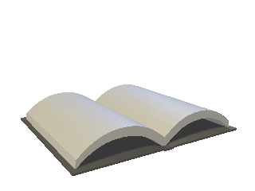

üìÖ Data e Horário do Evento
Domingo, 20 de Julho de 2025
Horário: 15h00 (horário de Brasília)
 Missão 1/3: Protocolo F-47
 Contexto Inicial: O Roubo no Mar de San Fierro
Contexto Inicial: O Roubo no Mar de San Fierro
Na calada da madrugada, um cargueiro internacional, nomeado “Titan Maru”, atracou discretamente no porto de San Fierro, transportando uma quantia milionária em dinheiro sujo — valores apreendidos de organizações criminosas e prestes a serem incinerados como parte de um acordo Internacional secreto.
Mas algo deu errado. A "Valhalla 33", um grupo de mercenários experientes, interceptou o carregamento em pleno mar, assassinou a tripulação de segurança e sequestrou o navio. Agindo com precisão militar, eles conseguiram atracar sem levantar suspeitas e estão atualmente escondidos em uma base improvisada entre os contêineres do porto industrial, preparando sua fuga.
A bordo de sua equipe há um elemento-chave: “Doutor Morte”, um ex-médico militar especializado em salvar vidas — mas apenas as dos seus. Ele tem um kit cirúrgico improvisado e é capaz de manter os mercenários vivos mesmo sob fogo pesado.
O plano é claro: carregar o dinheiro em um veículo de fuga que chegará dentro de instantes, e sumir de San Fierro antes que alguém perceba o que aconteceu.
 Resposta: Agentes 47 lideram a ofensiva com a ROXO & UNIMED
Resposta: Agentes 47 lideram a ofensiva com a ROXO & UNIMED
Um alerta anônimo ativou o Protocolo F-47, um chamado de emergência para uma força clandestina de espionagem internacional, os lendários Agentes Forty Sevn — também conhecidos como os Agentes 47. Esses operativos possuem licença para matar em serviço, são especialistas em infiltração, contra-ataque e inteligência em campo.
Agentes da 157 — uma pequena Força Tarefa de espionagem atua pela região de San Fierro. A UNIMED disponibilizou um médico de prontidão, equipado para prestar suporte imediato, evacuação de feridos e resgate em zona de combate. Em resposta à urgência da operação, a ROXO, uma divisão de elite especializada em contraterrorismo urbano e operações clandestinas no Brasil Vida Boa, enviou seus melhores agentes para se infiltrar silenciosamente no porto de San Fierro e reforçar a ofensiva. O médico é peça fundamental na missão.
 Se o médico da UNIMED for abatido, a equipe dos Agentes 47 perderá completamente o suporte médico. Cada vida será uma aposta tática, e a sobrevivência dependerá do trabalho em equipe.
Se o médico da UNIMED for abatido, a equipe dos Agentes 47 perderá completamente o suporte médico. Cada vida será uma aposta tática, e a sobrevivência dependerá do trabalho em equipe.
 Tempo da Missão: 10 Minutos
Tempo da Missão: 10 Minutos
A equipe da Valhalla33 está com tudo preparado para a extração. Um veículo estará disponível para fuga em exatamente 10 minutos após o início da operação.
Se os Agentes 47 e todos os envolvidos na operação não neutralizarem todos os mercenários antes do tempo limite, a fuga será completa e os mercenários vencerão a missão, escapando com o dinheiro e a vitória.
 Enredo
Enredo
- O veículo para extração tem tempo cronometrado de 10 minutos — se ele sair da zona antes da recuperação do carregamento, é fim de jogo.
- O “Doutor Morte” não necessariamente salva vidas — ele está disposto a tudo para manter os mercenários em pé.
- O médico da UNIMED pode improvisar atendimentos de urgência, mas também precisa ser protegido: ele é peça-chave da operação.
- Possibilidade de moralidade dúbia — o traidor que denunciou os mercenários pode ser um agente infiltrado.
 Condições de Vitória
Condições de Vitória
Vitória dos Mercenários (Valhalla 33):
- Veículo de fuga parte com o dinheiro após 10 minutos.
- Ao menos um membro da equipe sobrevive e embarca.
Vitória dos Agentes + UNIMED:
- Todos os mercenários são neutralizados antes da fuga.
- O dinheiro é recuperado.
- O médico sobrevive até o final da operação.
üí¨ Protocolo F-47
"Protocolo F-47 ativado. Um roubo de alto risco, um veículo a caminho, e apenas 10 minutos para reagir. A UNIMED está em campo, mas se o médico cair... é cada um por si. Você vai deixar os mercenários fugirem com milhões?"
 Dinâmica da Missão (Para Jogadores)
Dinâmica da Missão (Para Jogadores)